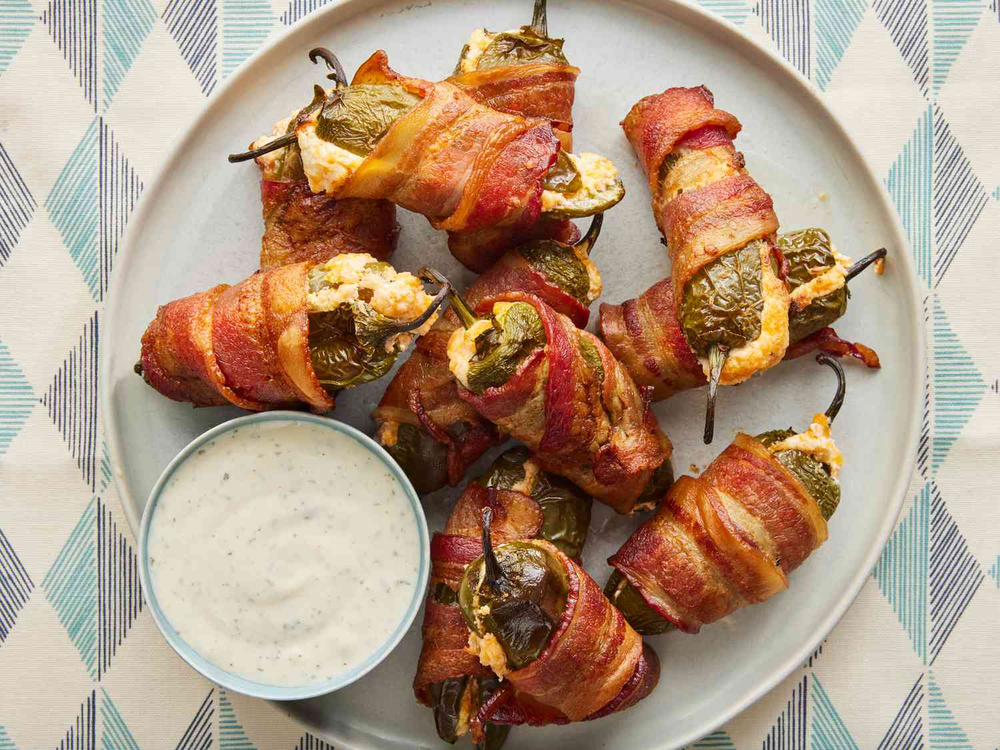

Bacon-Wrapped Jalapeño Poppers

Description:
These jalapeño poppers are creamy in the middle with crispy bacon on the outside. They're easy to make and taste so much better than traditional poppers.
Ingredients:
- Cream cheese and cheese: The rich jalapeño popper filling is a blend of equal parts cream cheese and shredded Cheddar cheese.
- Jalapeños: We recommend wearing food-grade gloves while you remove the seeds and membranes to prevent burning your skin.
- Bacon: Of course, you'll need bacon to wrap up your cream cheese-stuffed jalapeños!
Steps:
- Make the filling.
- Fill each jalapeño half with cheese mixture, then put the halves back together.
- Wrap each reassembled jalapeño with bacon.
- Cook in the preheated oven until the bacon is crispy.